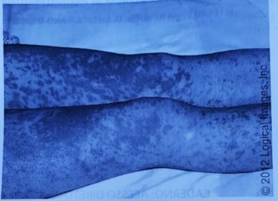
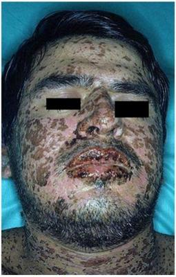

Questão 1 · Dermatologia · Síndrome de StevensJohnson e Necrólise epidérmica tóxica · 4000178614Uma paciente de 22 anos de idade compareceu à unidade de emergência, com queixa de aparecimento, havia 3 dias, de lesões na cavidade oral e pele. Informou ainda, que as lesões surgiram inicialmente nos ombros, tendo aspecto semelhante a queimadura solar. Posteriormente, estenderam-se para a região proximal dos membros superiores e para os joelhos. Relatou também febre, mal-estar e mialgias. Em sua história patológica pregressa, há menção a epilepsia e asma. A paciente faz uso de hidantoína — introduzida recentemente, em substituição a fenobarbital — e salmeterol/budesonida inalatório. A paciente tem uma irmã com diagnóstico de lúpus eritematoso sistêmico e uma tia em tratamento para pên go foliáceo. Conforme o exame físico, as lesões ocupam menos de 10% da superfície corpórea, sendo as lesões cutâneas caracterizadas predominantemente pela presença de áreas de eritema, com presença de permeio de pápulas edematosas (com centro de tonalidade violácea) e formação de bolhas com desprendimento cutâneo limitado, havendo algumas típicas lesões em alvo. Nos lábios, há crostas hemáticas aderidas a centros de desprendimento mucoso. O médico que atende a paciente, considerando riscos e benefícios para ela, deve explicar-lhe que a abordagem diagnóstica correta para o seu caso, no momento, é
A solicitar biópsia cutânea com pesquisa por imunofluorescência, dado o histórico familiar de pênfigo foliáceo.
B encaminhar a paciente para pesquisa de FAN em células Hep-2, em função do padrão típico de lúpus cutâneo subagudo.
C entrar em contato com o laboratório e solicitar a pesquisa de exotoxina estafilocóccica (síndrome da pele escaldada estafilocóccica).
D considerar os dados da anamnese e do exame físico suficientes para o provável diagnóstico de farmacodermia pelo anticonvulsivante.
Questão 2 · Emergências Pediátricas · Pediatria · 4000165101Reação medicamentosa com eosinof ilia e sintomas sistêmicos DRESS Menina de 7 anos com febre há 4 dias e rash cutâneo morbiliforme disseminado, pruriginoso, mucosas normais. Também apresenta edema periocular, linfadenopatia cervical, faringite e mal-estar. Exames laboratoriais demonstram de alteração aumento das transaminases e eosino lia. Histórico de uso de carbamazepina por crises convulsivas há um mês e de amoxicilina na última semana por faringite e febre. Sobre esta situação selecione a opção correta. I – O diagnóstico mais provável é a síndrome DRESS. II – A principal intervenção terapêutica é a utilização de corticosteroides. III – Pode ter um curso recidivante tempos depois da melhora inicial, necessitando de acompanhamento por vários meses.
A As afirmativas I e II são verdadeiras. A afirmativa III é falsa.
B As afirmativas I e III são verdadeiras. A afirmativa II é falsa.
C As afirmativas II e III são verdadeiras. A afirmativa I é falsa.
D As afirmativas I, II e III são verdadeiras.
E As afirmativas I, II e III são falsas.
Questão 3 · Diagnóstico dif erencial · Dermatologia · Apresentação clínica · 4000164653Considere uma paciente feminina, 29 anos com relato de retorno recente de viagem para a Alemanha, onde há cerca de 10 dias apresentou dor em joelho direito que teve alivio completo com o uso de um anti-inflamatório não esteroidal (SIC) o qual não soube identi car. Logo após chegar ao Brasil, há cinco dias, iniciou com odinofagia, pigarro e máculas eritematosas em tronco. As lesões de pele evoluíram com a formação de vesículas e bolhas, aumentaram a área de pele comprometida no tronco e passaram a comprometer também os membros. Houve piora progressiva da odinofagia e associação de lesões eritematosas na mucosa oral, impedindo a paciente de se alimentar. Ao exame a paciente se apresenta lúcida e orientada, pressão arterial de 117/78 mmHg, frequência cardíaca de 114 bpm, frequência respiratória de 22irpm, saturação de oxigênio de 95% em ar ambiente e temperatura axilar de 36°C. Apresenta respiração ruidosa devido a presença de secreção respiratória em via aérea superior, não sendo possível definir como estridor ou cornagem. A ausculta pulmonar apresenta apenas a transmissão dos ruídos em via aérea superior e a ausculta cardíaca não apresentava anormalidades, exceto pela taquicardia. Na oroscopia apresenta hiperemia e descamação difusa da mucosa oral, com presença de grande quantidade de secreção em oro-farínge, mas sem placas purulentas. Apresenta hiperemia e secreção intensa em mucosa conjuntiva palpebral e ocular. Na ectoscopia apresenta inúmeras bolhas, algumas íntegras, outras rompidas em região de tronco e região proximal de membros inferiores, adjacente às áreas de hiperemia em que a epiderme se descolava ao mínimo atrito. Assinale a alternativa correta com relação ao caso descrito.
A A principal hipótese é de psoríase bolhosa com comprometimento de mucosas. O paciente necessita de pulsoterapia de corticosteroide, seguido de imunossupressão com metotrexate.
B A principal hipótese diagnóstica é necrólise epidérmica tóxica como reação adversa do anti-inflamatório. A paciente necessita de cuidados em unidade de terapia intensiva, pois apresenta alto risco de comprometimento de via aérea e de outras complicações como hipovolemia e sepse por infecções secundárias.
C A principal hipótese diagnóstica é sarampo, visto que o paciente retornou de país que não erradicou a doença e apresenta comprometimento da mucosa oral. A paciente necessita de cuidados em unidade de terapia intensiva, pois o sarampo é universalmente grave em adultos.
D A principal hipótese diagnóstica é síndrome de Stevens-Johnson como reação adversa do anti-inflamatório. A paciente necessita iniciar urgentemente pulsoterapia de corticosteroide, seguido de imunossupressão com ciclosporina.
E A principal hipótese diagnóstica é pênfigo vulgar. A paciente deve ser idealmente internada em unidade especializada em tratamento de queimaduras, visto a necessidade de curativos extensos.
Questão 4 · Farmacodermias · 4000146088Assinale a alternativa correta sobre as Farmacodermias.
A As resposta cutâneas adversas a medicamentos surgem apenas a partir de reações mediadas imunologicamente.
B Os esteroides sistêmicos causam uma variedade de alterações cutâneas, como erupções acneiformes.
C Na síndrome de Stevens Johnson, observa-se acometimento da camada mais superficial da epiderme, caracterizado pela presença e lesões bolhosas e sinal de Nikolsky positivo.
D O acometimento linfonodal é raro em pacientes com DRESS.
Questão 5 · Mecanismos imunológicos das f armacodermias · 4000146079Considere a Síndrome de Stevens Johnson (SSJ) e a Necrólise Epidérmica Tóxica (NET), assinale a alternativa correta.
A Fármacos classicamente relacionados a reações de hipersensibilidade tipo I. apresentam algum risco de induzir reações de hipersensibilidade tipo IV, potencialmente fatais.
B O comprometimento da pele superior a 30% da sua extensão define SSJ.
C Os sintomas sistêmicos associados à SSj e `NET incluem febre, redução de enzimas hepáticas, manifestações intestinais e pulmonares, além de elevação dos níveis de linfócitos.
D Os antibióticos e AINEs estão entre os fármacos de maior risco apenas para SSJ.
Questão 6 · Reação medicamentosa com eosinof ilia e sintomas sistêmicos DRESS · 4000143479Menino de 7 anos de idade, epiléptico, em uso de carbamazepina há três semanas, evoluindo com quadro de febre, exantema morbiliforme inicialmente em parte superior do tronco, seguido de edema de face e extremidades, linfonodomegalia difusa, icterícia, hepatomegalia 4-5 cm rebordo costal direito, e alterações no hemograma. Não há acometimento de mucosas. Não se evidencia lesões em alvo, nem sinal de Nikolsky positivo. Ao exame laboratorial, apresentou bilirrubina total de 22 mg/dL; aspartato aminotransferase (TGO) 205 U/L; alanina aminotransferase (TGP) 300 U/L; o hemograma revelou 11.390 μL leucócitos, com 2.596 μL eosinófilos. O exame histológico realizado nas extremidades evidenciou in ltrado inflamatório linfocitário maduro na derme e exocitose. Presença de eosinó los esparsos em meio ao infiltrado inflamatório. Ante o exposto, o diagnostico provável é:
A Sindrome Dress – (síndrome de hipersensibilidade a drogas com envolvimento sistêmico)
B Urticária
C Sindrome Stevens-Johnson
D Necrólise epidérmica tóxica
E Exantema Súbito
Questão 7 · Apresentação clínica · 4000143384Pré-escolar, 4 anos, foi admitido em hospital devido a quadro de tosse, coriza nasal, exantema maculopapular que iniciou em face há 3 dias e disseminou-se para região corporal com febre 38-39° diariamente. Apresenta exantema conjuntival e exulceração labial. No segundo dia de evolução, as placas tornaram-se violáceas com aparecimento de bolhas em membros superiores e inferiores, agravamento de lesões em mucosas e piora do estado geral, necessitando de ventilação mecânica e suporte hemodinâmico com drogas vasoativas. Tem antecedentes de crises convulsivas e encontra-se em uso de carbamazepina há 15 dias. Neste caso, o diagnóstico clínico é
A síndrome de Guillan-Barré.
B síndrome de Job.
C eritema infecioso.
D síndrome de Chediak-Higashi.
E síndrome de Steven-Johnson.
Questão 8 · Apresentação clínica · 4000139798Paciente de 45 anos, assintomático, com hiperuricemia (ácido úrico sérico de 8,2 mg/dL) em avaliação laboratorial preventiva, inicia tratamento com alopurinol. Quatro semanas após o início da medicação, passa a apresentar lesões maculopapulares em tronco e membros, associadas à febre persistente, à linfonodomegalia cervical, axilar e inguinal e a mal- estar. Exames laboratoriais mostram leucocitose com presença de linfócitos atípicos e plaquetopenia leve, além de aumento de transaminases e elevação de creatinina. Sobre o diagnóstico para esse quadro, é correto afirmar que se trata de provável:
A síndrome de hipersensibilidade induzida por drogas (ou síndrome DRESS –
B urticária medicamentosa, sendo indicado suspensão da droga e prescrição de corticoide.
C síndrome de Stevens Johnson, sendo indicada a observação ambulatorial após a suspensão da droga.
D Infecção viral, sem relação com o uso do alopurinol, sendo indicado tratamento sintomático e reavaliação ambulatorial.
E necrólise epidérmica tóxica, sendo indicado terapia imunossupressora com corticosteroides.
Questão 9 · Síndrome de StevensJohnson e Necrólise epidérmica tóxica · 4000134383Sobre o manejo da síndrome de Stevens-Johnsons, analise as afirmativas a seguir. I. Geralmente é secundária ao uso de algum fármaco, mais raramente sendo causada por infecções. II. Os pacientes podem voltar a utilizar o fármaco, desde que a entrada seja gradual e criteriosa. III. Tem potencial letal, sob a forma de dermatite esfoliativa. Na maioria dos casos, surge de duas a oito semanas após o início do tratamento. Estão corretas as afirmativas
A I e II, apenas.
B I e III, apenas.
C II e III, apenas.
D I, II e III.
Questão 10 · Apresentação clínica · Tratamento · 4000127326Mulher de 32 anos procurou assistência médica, há 10 dias, por quadro de disúria e polaciúria, sendo tratada com sulfametoxazol e trimetoprim. Há 5 dias, passou a apresentar febre alta, dor em orofaringe e eritema em conjuntivas bilateralmente. Após um dia do início do quadro, percebeu manchas eritematosas inicialmente em tronco que, em menos de 24 horas, acometeram também extremidades. Em áreas de atrito, as lesões evoluíram com escurecimento central e bolhas. Procurou novamente atendimento, apresentando lesões visualizadas na figura A. Diante do provável diagnóstico, qual o cenário adequado e quais as medidas de tratamento, respectivamente?

A Enfermaria – imunoglobulina endovenosa e corticoterapia sistêmica.
B Unidade de Terapia Intensiva – antibioticoterapia endovenosa e tópica.
C Unidade de queimados – cuidados de suporte e vigilância para infecções secundárias.
D Unidade de Terapia Intensiva – corticoterapia endovenosa e depois oral até resolução.
Questão 11 · Apresentação clínica · 4000120285Uma criança de cinco anos de idade foi levada ao consultório com queixa de eritema em face e parte superior do tronco, acompanhado de febre de 39°C e edema facial há três dias. Está em uso de anti-histamínico prescrito em pronto-socorro há um dia, sem melhora, apresentando progressão do eritema para as extremidades. Ao exame, foram observadas lesões eritematosas con uentes em mais da metade da superfície corpórea e linfonodomegalia cervical e inguinal. Sua mãe nega alergias pregressas, a vacinação está em dia e faz uso, há seis semanas, de fenobarbital por quadro de epilepsia em investigação, com crises controladas. Exames laboratoriais revelaram: Hb 11,5 g/dL; leucócitos 10 mil/uL (30% neutró los, 50% linfócitos, sendo 10% de atípicos, 8% monócitos e 12% eosinó los); plaquetas 200 mil/uL; TGO 300 U/L; TGP 240 U/L; e bilirrubinas normais. Com base nessa situação hipotética, é correto afirmar que o diagnóstico mais provável é o de
A doença exantemática viral.
B reação medicamentosa com eosinofilia e sintomas sistêmicos (DRESS).
C urticária com angioedema.
D hepatite viral.
E síndrome de Stevens-Johnson.
Questão 12 · Apresentação clínica · 4000119407Mulher, 30 anos, chega ao pronto socorro com quadro de febre de 39ºC há 4 dias, associado a lesões de pele (vide imagem). Introduzido alopurinol há um mês para tratamento de gota. No hemograma, apresenta eosino lia e linfócitos atípicos, associado a um aumento de TGO e TGP. A principal hipótese diagnóstica é:

A Síndrome de Stevens-Johnson.
B Síndrome hiperosinofilica.
C Síndrome de DRESS.
D Lupus eritematoso cutâneo.
Questão 13 · Exantema simples · Introdução · Eritema nodoso · 4000117059Em relação às Farmacodermias podemos afirmar: I. As reações medicamentosas adversas são desencadeadas por mecanismos imunológicos e não imunológicos; II. Ana laxia é a reação sistêmica que se desenvolve em minutos ou horas depois da introdução da droga causadora da hipersensibilidade; III. Reação de Jarish-Herxheimer é uma reação de piora clínica e sintomática que ocorre cerca de 12 horas após a primeira administração de um medicamento; IV. Dentre as expressões clínicas das farmacodermias temos: alopecia, eritema nodoso, eritrodermia, exantema agudo, urticária, síndrome de Stevens-Johnson. Estão corretas as afirmativas:
A I e II
B II e III
C I, II e III
D III e IV
E I, II, III e IV
Questão 14 · Introdução · Reação medicamentosa com eosinof ilia e sintomas sistêmicos DRESS · 4000108652Qual das classes de drogas abusivas é a causa mais comum de Síndrome de DRESS?
A Anti-hipertensivos.
B Antibióticos.
C Anti-inflamatórios.
D Anticonvulsivantes.
Questão 15 · Erupção f ixa à droga · 4000074098Homem, 60 anos, em consulta na UBS, notou há oito meses o aparecimento de mancha escura, ovalada, antebraço direito, com períodos de vermelhidão e prurido local. Refere ainda cefaléia crônica e o uso frequente de analgésicos. Em relação ao quadro clínico o diagnóstico correto é:
A Eritema nodoso.
B Eritema pigmentado fixo.
C Eritema ""ab igne"".
D Eritema Multiforme.
Questão 16 · Pustulose exantemática generalizada aguda PEGA · 4000050056Considere a seguinte descrição de uma doença: Caracteriza-se pelo desenvolvimento abrupto de numerosas pústulas não foliculares sobre áreas de eritema difuso com edema, que pode evoluir para eritrodermia, acompanhado por febre alta e leucocitose. Pode haver con uência das lesões com sinal de Nikolsky positivo, além de acometimento eventual de membranas mucosas, geralmente da cavidade oral. Há predomínio neutrofílico na série branca do hemograma, comumente acima de 7.000/mm³. Biópsia de pele demonstra coleções de neutró los e necrose esparsa de queratinócitos na porção superior da epiderme. É ocasionada por exposição a drogas em mais de 90% dos casos, sendo a classe dos betalactâmicos a responsável pela maioria dos casos. O intervalo entre a exposição à droga e o desenvolvimento de sintomas é de geralmente 24 a 48 horas, com tempo médio de 1 a 11 dias. Pode haver acometimento visceral, como hepatite, nefrite e pneumonite. O manejo se dá por suspensão da droga identi cada como gatilho, tratamento suportivo, e corticoterapia sistêmica e/ou tópica. Qual é a doença descrita?
A Síndrome da hipersensibilidade induzida por droga (DIHS).
B Pustulose exantemática generalizada aguda.
C Síndrome de Stevens-Johnson.
D Psoríase pustulosa aguda.
E Acne fulminans.
Questão 17 · Erupção f ixa à droga · 4000042398Assinale a alternativa correta sobre o eritema fixo.
A O fármaco mais frequentemente associado é a amoxicilina.
B As reações tendem a ocorrer, sobretudo, na região torácica.
C As lesões costumam ser papuloeritematosas, violáceas, evoluindo para lesões acastanhadas, localizadas comumente na genitália, área perineal, lábios, mãos e pés.
D O pilar do tratamento são os anti-histamínicos.
Questão 18 · Eritema multif orme · 4000042388Sobre o eritema multiforme, marque a opção correta.
A Aproximadamente metade dos casos é precedida por uma fase prodrômica semelhante a uma infecção do trato respiratório inferior.
B Eritema fixo e urticária aguda faz parte do diagnóstico diferencial.
C A profilaxia antiviral crônica é, frequentemente, prescrita empiricamente para a forma da doença induzida pelo EBV.
D O tratamento da forma grave inclui corticosteroides sistêmicos de longo prazo e imunossupressores para doenças recorrentes, como azatioprina e micofenolato de mofetila.
Questão 19 · Farmacodermias · 4000042381Identifique a alternativa correta quanto aos fatores de risco para erupções cutâneas induzidas por fármacos.
A Na faixa etária pediátrica, os antimicrobianos e os anticonvulsivantes são, frequentemente, associados a erupções por fármacos.
B A administração tópica tem maior probabilidade de resultar em sensibilização, enquanto a ingestão oral tem risco intermediário e a via parenteral tem menor probabilidade de causar reação imunológica.
C Antecedente de atopia é fator de risco importante para reações a fármacos.
D Filhos cujos pais sofrem de alergia medicamentosa apresentam risco relativo cinco vezes maior para alergias à mesma substância.
Questão 20 · Apresentação clínica · Tratamento · 4000026347M.C.A., de dez anos, do sexo masculino, com quadro, há aproximadamente três dias, de erupção cutâneo-mucosa múltipla, bolhosa, erosiva e crostosa, acometendo 10% da superfície corporal, antecedida de febre, cefaleia, coriza, artralgias e mialgias. Precedendo este quadro, relatou episódio de amigdalite, com uso de amoxacilina e nimesulida, há cerca de trinta dias. Diante dos sintomas, essa condição clínica é indicativa de:
A eritema pigmentar fixo bolhoso e o uso de corticosteroide sistêmico é mandatório.
B síndrome de Stevens-Johnson e a utilização de corticosteroide sistêmico é controversa.
C necrólise epidérmica tóxica e a introdução de corticoide sistêmico é controversa.
D síndrome da pele escaldada estafilocócica e o tratamento com corticosteroide sistêmico é fundamental.
Questão 21 · Farmacodermias · 4000002870Paciente com história de mancha hipercrômica ovalada que surge após o uso de analgésicos, desaparece gradualmente após a suspensão da medicação e recidiva no mesmo local após a suspensão da medicação e recidiva no mesmo local após nova exposição à droga. Trata-se provavelmente de:
A Eritema nodoso.
B Exantema agudo.
C Urticária crônica.
D Eritema fixo.
Questão 22 · Apresentação clínica · 4000106285Menino, 7 anos de idade, é levado ao pronto-socorro por quadro de febre de até 39°C há 2 dias, associado a queda do estado geral. Mãe refere ter notado surgimento de lesões orais há 2 dias, que ontem evoluíram para o restante da pele. Sem outras queixas. Tem por antecendente o diagnóstico de epilepsia, tendo iniciado uso de carbamazepina há 3 semanas. Ao exame clínico, criança regular estado geral, com presença de erosões e crostas hemáticas nos lábios, com vesículas e bolhas rotas, com erosões na mucosa gengival, palato mole e palato duro, mucosa jugal e base da língua. Apresenta também vesículas e bolhas de conteúdo sero-hemático, erosões e áreas de descolamento epidérmico com comprometimento de 40% de superfície corpórea. O diagnóstico mais provável para o quadro clínico atual é :
A Eritema pigmentar fixo.
B Pênfigo bolhoso.
C Erupção Variceliforme de Kaposi.
D Necrólise epidérmica tóxica.
Questão 23 · Síndrome de StevensJohnson e Necrólise epidérmica tóxica · 4000071519Assinale a alternativa incorreta em relação à necrólise epidérmica tóxica (síndrome de Lyell).
A O envolvimento ocular pode levar à ceratite, à conjuntivite e ao simbléfaro.
B A taxa de mortalidade habitual é acima de 25%.
C O tratamento de escolha é a administração sistêmica de corticoesteroides.
D Culturas da pele, mucosas, urina, sangue e da ponta dos acessos venosos direcionam a antibioticoterapia.
E As principais drogas responsáveis são os anticonvulsivantes, antibióticos e anti- inflamatórios não hormonais.
Questão 24 · Síndrome de StevensJohnson e Necrólise epidérmica tóxica · 4000056094A Síndrome de Steven Jhonson é uma farmacodermia que apresenta acometimento de mucosas além do acometimento cutâneo. Sobre a síndrome assinale a incorreta:
A O padrão ouro do tratamento é corticoide sistêmico associado a antibioticoterapia profilática.
B A necrólise epidérmica tóxica é uma manifestação do espectro da Síndrome de Steven Jhonson, recebendo esta denominação quando as lesões cutâneas acometem mais de 30% da superfície corporal.
C O tratamento é suportivo e o óbito pode ocorrem e casos de infecção ou distúrbios eletrolíticos graves.
D A urticária aguda induzida por drogas é um importante diagnóstico deferencial.
E Antiepiléticos estão entre as drogas mais relacionadas ao desenvolvimento da síndrome.
Questão 25 · Eritema multif orme · 4000054376Paciente masculino de 19 anos procura o pronto-atendimento por lesões ulceradas em lábio inferior e por exantema maculopapular em palmas das mãos com morfologia em íris. O agente infeccioso associado a essa condição é:
A Eritema multiforme.
B Necrólise epidérmica tóxica.
C Síndrome de Stevens-Johnson.
D Síndrome DIHS.
E Urticária.
Questão 26 · Apresentação clínica · 4000119912Homem, 24 anos, com quadro geral de febre, prostração, mialgias e cefaleia que evoluiu em 24 horas com surgimento de lesões difusas eritêmato-bolhosas, algumas exulceradas com crosta hemática, predominando em face e tronco, com acometimento de mucosas (oral, conjuntival e uretral – vide imagem abaixo). Assinale o agente etiológico e o respectivo diagnóstico mais provável para este quadro:

A Neisseria meningitidis – meningococcemia.
B Paramyxovírus – sarampo.
C Carbamazepina – Síndrome de Stevens Johnson.
D Anticorpo anti-desmogleína – pênfigo vulgar.
E Warfarin – púrpura fulminans.
Questão 27 · Síndrome de StevensJohnson e Necrólise epidérmica tóxica · 4000071192Qual alternativa abaixo é a correta em relação à síndrome de Stevens-Johnson e à necrose epidérmica tóxica?
A O tratamento com altas de imunoglobulina venosa tem se mostrado benéfico.
B A biópsia de pele está contraindicada devido ao risco de infecção secundária.
C O envolvimento de mucosa não é comum, sendo um sinal de mau prognóstico.
D O uso de corticoide tópico reduz o processo inflamatório local.
E A febre é um sintoma incomum devido à perda de calor gerada pela extensa área de pele não íntegra.
Questão 28 · Reação medicamentosa com eosinof ilia e sintomas sistêmicos DRESS · 4000064368É uma reação adversa a medicamento que se apresenta com erupção eritematosa, maculopapular, que pode se tornar purpúrica, pustulosa ou liquenoide; ou ainda progredir para eritrodermia esfoliativa. Pode estar acompanhada por muitos dos seguintes achados: febre, edema facial, linfadenopatia, leucocitose (frequentemente com linfocitose atípica e eosino lia), hepatite, miosite (inclusive miocardite) e, às vezes, nefrite (com proteinúria) ou pneumonite. Apresenta mortalidade de 1 a 10%, sendo mais alta quando associada a hepatite. Alopurinol é a causa mais comum. A hipótese diagnóstica para a descrição desse quadro clínico é:
A Síndrome do homem vermelho.
B Eritema multiforme.
C Necrólise epidérmica tóxica.
D Síndrome DRESS.
E Síndrome de Stevens-Johnson.
Questão 29 · Síndrome de StevensJohnson e Necrólise epidérmica tóxica · 4000023609Paciente de 26 anos, do sexo masculino, relata dor intensa nos lábios superior e inferior, bordo lateral da língua, mucosa oral e glande peniana, após o surgimento de placas eritematosas e bolhas, com posterior ulceração e formação de crostas. O quadro iniciou-se após sete dias do uso de sulfametoxazol-trimetropima para tratamento de infecção do trato respiratório. Alterações oculares não foram observadas. A associação do exame clinico e histopatológico foi compatível com o dagnóstico de síndrome de Stevens-Johnson. A síndrome de Stevens-Johnson (SSJ)
A é uma reação cutânea a medicamentos comuns e, nos indivíduos com Aids, o risco de desenvolvê-la diminui.
B tem os antibióticos (como sulfonamidas), os anti-inflamatórios não esteroides e os anticonvulsivantes como os medicamentos mais frequentemente implicados.
C apresenta lesões oculares frequentes, podendo resultar em sequelas graves e até cegueira, porém não ocorre comprometimento sistêmico, com envolvimento de órgãos internos.
D manifesta lesões cutânes desde máculo-pápulas até púrpuras e bolhas, sendo o destacamento epidérmico >30% da superfície corporal.
Questão 30 · Dermatologia · Reação medicamentosa com eosinof ilia e sintomas sistêmicos DRESS · 4000005743Homem branco, 20 anos de idade, comparece ao pronto atendimento e refere pele vermelha e coceira no corpo todo há 3 dias. Há 1 mês, após acidente automobilístico apresentou convulsão tônico-clônica generalizada, foi avaliado pelo neurologista que prescreveu fenitoína. Apresenta ao exame físico: exantema generalizado, febre 38°C; adinamia e não tem lesões nas mucosas. Qual é a conduta inicial?
A Suspender a fenitoína e solicitar hemograma, monitorar funções hepática e renal.
B Suspender fenitoína, solicitar eletroencefalograma e RX de tórax, iniciar corticoterapia oral.
C Manter fenitoína, solicitar eletrocardiograma e RX de tórax e iniciar corticoterapia tópica.
D Manter fenitoína, solicitar eletrocardiograma, hemograma e monitorar função renal.
E Suspender fenitoína, solicitar eletroencefalograma, eletrocardiograma e iniciar corticoterapia intravenosa.
Questão 31 · Apresentação clínica · Tratamento · 4000124972Paciente do sexo feminino, 18 anos, chega ao pronto-socorro com queixa de mal- estar, febre e lesões de pele há 48 horas. Ao exame físico, apresenta PA= 80 x 50 mmHg; FC= 100 bpm; eritema difuso e con uente em membros, tórax, palmas e plantas dos pés. Orofaringe com hiperemia sem secreção purulenta. Informa que utilizou amoxicilina por conta própria há três dias para dor de garganta. Qual a hipótese diagnóstica e a conduta apropriada para essa paciente?
A Dermatite de contato; observação e introdução de prednisona.
B Infecção bacteriana; acompanhamento ambulatorial e mudança do antibiótico.
C Varicela; isolamento de contato e cuidados locais.
D Síndrome de Stevens-Johnson; internação e suspensão da amoxicilina.
E Vasculite; biópsia de pele e imunossupressor.
Questão 32 · Reação medicamentosa com eosinof ilia e sintomas sistêmicos DRESS · 4000113534Qual das classes de drogas abusivas é a causa mais comum de Síndrome de DRESS?
A Anti-hipertensivos.
B Antibióticos.
C Anti-inflamatórios.
D Anticonvulsivantes.
Questão 33 · Apresentação clínica · Tratamento e prognóstico · 4000098652Paciente do sexo feminino, 48 anos, foi atendida em unidade de saúde com quadro de eritema e descamação difusa (> 80% da superfície corporal), sem acometimento de mucosa, há 5 dias. Referia que há 1 mês após trauma crânio-encefálico por acidente automobilístico fora prescrito carbamazepina para evitar convulsões, medicamento que vinha em uso desde então. Apresentava ainda febre (38,2 °C) e edema periorbitário acompanhados por queda do estado geral e adenopatia inguinal bilateral dolorosa. Ao exame laboratorial no momento da internação: leucocitose (17.000 leucócitos/mm3), eosino lia (21%), AST = 108 (VN: 12-46), ALT = 136 (VN: 3.0-50), GGT = 575 (VN: 12.5-54), fosfatase alcalina = 482 (VN: 65-300). Sorologias para EBV, CMV, HIV, hepatite B e C foram negativos, assim como para toxoplasmose e sí lis. Qual o diagnóstico mais provável e conduta mais adequada neste caso?
A A principal suspeita diagnóstica é de síndrome da pele escaldada estafilocócica (SSSS), sendo necessário internamento e oxacilina venosa.
B Trata-se de um caso de Síndrome DRESS, a conduta mais adequada é suspensão da carbamazepina, internamento hospitalar para medidas gerais de cuidado e avaliar corticoterapia sistêmica.
C O diagnóstico mais provável é de Síndrome de Stevens-Johnson, e no tratamento é primordial o internamento para hidratação, anti-histamínicos e manutenção da carbamazepina para evitar novas crises convulsivas.
D Necrólise epidérmica tóxica seria a principal hipótese e as medidas a serem tomadas são uso imediato de corticosteroides e antibióticos profiláticos, devido ao risco de infecção.
Questão 34 · Eritrodermia micose f ungoide e síndrome de Sezary · 4000037930Mulher, 78 anos, hipertensa e diabética, chega ao pronto atendimento apresentando quadro de eritrodermia há 40 dias. Refere quadro semelhante há 6 meses, que se resolveu com tratamento clínico. É possibilidade diagnóstica:
A Diabetes descompensado.
B Sídrome nefrítica.
C Farmacodermia.
D Lupus.
Questão 35 · Mecanismos imunológicos das f armacodermias · 4000125123A reação cutânea imediata a determinada droga é decorrente de:
A Deposição de imunocomplexos e consumo de complemento, ocasionado vasculite cutânea.
B Liberação de IgE por estimulação direta da droga como no caso dos contrastes iodados ou por sensibilização prévia.
C Liberação de mediadores inflamatórios pelos mastócitos tissulares ou pelos basófilos.
D Estímulo direto de linfócitos T e B com produção de anticorpos específicos contra droga.
E Nenhuma das anteriores.
Questão 36 · Mecanismos imunológicos das f armacodermias · 4000108969A imunoglobulina mediadora da hipersensibilidade do tipo 1:
A IGA.
B IGE.
C IGG.
D IGM.
Questão 37 · Síndrome do homem vermelho · 4000107335Qual das drogas abaixo que é responsável pela síndrome do homem vermelho?
A Linezolida.
B Teicoplanina.
C Vancomicina.
D Daptomicina.
Questão 38 · Introdução · 4000107216Qual é a causa mais frequente de DRESS síndrome?
A Dipirona.
B Anticonvulsivantes.
C Alopurinol.
D Dapsona.
Questão 39 · Síndrome do homem vermelho · 4000096259A ocorrência de formigamento, rubor de face, rubor de pescoço ou tórax (Síndrome do Homem Vermelho) está associado à infusão muito rápida do antibiótico:
A Oxacilina.
B Tetraciclina.
C Tigeciclina.
D Gentamicina.
E Vancomicina.
Questão 40 · Exantema simples · 4000088037A reação cutânea secundária mais comum ao uso de drogas é denominada:
A Eritema multiforme.
B Eritema tóxico.
C Eritema nodoso.
D Vasculite alérgica.
E Dermatite esfoliativa.
Questão 41 · Farmacodermias · 4000000457Em relação às drogas mais frequentemente utilizadas e suspeitadas como responsáveis pelo desencadeamento das reações cutâneas medicamentosas (RCM), estão citadas a seguir, EXCETO:
A Antibióticos
B Antiácidos
C Antiinflamatórios
D Anticonvulsivantes
E Analgésicos/antipiréticos
Questão 42 · Apresentação clínica · Tratamento · 4000123183Assinale a alternativa que preenche, correta e respectivamente, as lacunas do caso abaixo. Paciente masculino, de 14 anos, veio à consulta por apresentar febre (38°C) e coriza. Encontrava-se em regular estado geral. Ao exame dermatológico, observaram-se vesículas e bolhas acometendo área inferior a 10% da superfície corporal e também mucosas oral e ocular. Referiu uso de carbamazepina há 22 dias para manejo de enxaqueca. Além disso, possuía história familiar de tireoidite de Hashimoto. Com base no quadro, o diagnóstico mais provável é .................., e a conduta mais adequada é ......................
A Vasculite leucocitoclástica; manter a carbamazepina e associar anti-histamínicos.
B Síndrome de Stevens-Johnson; manter a carbamazepina e associar anti-histamínicos.
C Síndrome de Stevens-Johnson; suspender a carbamazepina como medida inicial.
D Reação lúpus-símile por fármaco; suspender a carbamazepina como medida inicial.
E Reação lúpus-símile por fármaco; manter a carbamazepina e associar anti-histamínicos.
Questão 43 · Síndrome do homem vermelho · 4000113080Com relação às reações adversas aos antibióticos parenterais, a síndrome do homem vermelho está relacionada ao seguinte antibiótico:
A tetraciclina.
B eritromicina.
C vancomicina.
D metronidazol.
E levofloxacina.
Questão 44 · Apresentação clínica · Tratamento · 4000072559Homem de 25 anos de idade refere febre alta e odinofagia há três dias. Procurou uma Unidade de Pronto Atendimento, sendo diagnosticado amigdalite aguda e prescrito amoxicilina, por via oral. Após três dias do início da antibioticoterapia, voltou ao serviço médico com febre, lesões cutâneas e piora do estado geral. Ao exame dermatológico, apresentava eritema difuso e con uente, placas eritematosas e anulares no tronco, palmas, plantas e parte proximal dos membros superiores e inferiores. Na mucosa oral e lábios, observavam-se erosões e crostas hemáticas, além de hiperemia e erosões na conjuntiva. O paciente deverá ser internado. Assinale a alternativa que apresenta, correta e respectivamente, o diagnóstico e a conduta a ser tomada.
A Dermatite urticariforme; anti-histamínico.
B Eritema multiforme minor; manter antibiótico.
C Impetigo; antibioticoterapia de largo espectro.
D Síndrome de Stevens-Johnson; observação e troca do antibiótico.
E Varicela; aciclovir endovenoso.
Questão 45 · Reação medicamentosa com eosinof ilia e sintomas sistêmicos DRESS · 4000070004A síndrome DRESS consiste em um quadro de hipersensibilidade a drogas acompanhado de eosino lia e sintomas sistêmicos. Em relação a essa síndrome, está INCORRETO:
A Pode ser induzida por medicamentos como fenitoina, barbitúricos, dapsona, sulfonamidas e alopurinol.
B Apresenta-se como púrpura difusa e rash liquenóide.
C Está associada a quadros de febre, edema facial e periorbitário, linfadenopatia difusa, leucocitose, hepatite, nefrite e pneumonite.
D As taxas de mortalidade chegam até 70%.
E O tratamento consiste na suspensão do medicamento e início de Prednisona 1,5 mg/kg com desmame lento.
Questão 46 · Reação medicamentosa com eosinof ilia e sintomas sistêmicos DRESS · 4000045052Verônica, 23 anos, mulher, internada na unidade de terapia intensiva para tratamento de hematoma subdural agudo secundário a trauma. Apresentou crise convulsiva e rebaixamento do nível de consciência sendo submetida à terapia com anticonvulsivantes e drenagem cirúrgica do hematoma. No décimo sexto dia de internação, iniciou com febre alta, padrão contínuo e erupções maculopapulares, eritematosas, algumas con uentes, pruriginosas, simétricas, distribuídas por face, tronco e membros superiores. Após 48 horas, observou-se disseminação das lesões para as extremidades inferiores, algumas delas com aspecto purpúrico, surgimento de edema palpebral simétrico e posteriormente facial. Passou a apresentar artralgia difusa de articulações apendiculares, linfadenopatia simétrica e generalizada com linfonodos pequenos, de formato ovóide, superfície lisa, consistência broelástica, móveis e discretamente dolorosos. Apresentava também discreta hepatomegalia dolorosa à palpação. Os exames complementares evidenciaram leucocitose com neutro lia, eosino lia, discreto aumento da creatinina sérica, sedimento urinário com leucocitúria e eosino lúria, além de aumento significativo de enzimas canaliculares hepáticas com discreto aumento de transaminases, O único fármaco em utilização naquele momento era a fenitoína. Assinale a alternativa CORRETA quanto ao diagnóstico:
A Pustulose exantemática aguda.
B Síndrome de hipersensibilidade à drogas (SHD ou DRESS)
C Eritema polimorfo.
D Síndrome de Stevens-Johnson.
E Urticária aguda com anafilaxia.
Questão 47 · Reação medicamentosa com eosinof ilia e sintomas sistêmicos DRESS · 4000043089Paciente do sexo masculino,16 anos, internado com queixa de "pele vermelha e descamando há quatro semanas". Há dois meses, relata ter sofrido traumatismo cranioencefálico e por episódios de convulsão foi medicado com fenitoína. O quadro iniciou com febre acompanhada por rash inicialmente em membros superiores que se disseminou para tronco e progressivamente para todo o corpo, incluindo face. Ao exame, febre (38,2°C) e edema periorbitário acompanhados por queda do estado geral e adenopatia inguinal bilateral dolorosa. Exame cardiovascular, respiratório e abdome sem alterações. Laboratório: Hb: 14, 5 g/dl; HT: 42%; Leucocitose (17.000 leucócitos/mm³); Eosino lia (21%); TGO = 190 (VN: 12-46); TGP = 140 (VN: 3.0-50); GGT = 90 (VN: 12.5-54); Fosfatase alcalina = 302 (VN: adultos 65-300). Qual é a hipótese diagnóstica?
A Sepse;
B Sífilis;
C Toxoplasmose;
D Tuberculose;
E Síndrome de Dress.
Questão 48 · Reação medicamentosa com eosinof ilia e sintomas sistêmicos DRESS · 4000011078Menino de 10 anos de idade foi levado a um pronto atendimento por estar apresentando “rash” cutâneo extenso, febre, vômitos e mal-estar. Ao exame físico apresentava, além do “rash” difuso e com aspecto urticariforme, adenomegalia cervical bilateral e hepatomegalia discreta. Referia início de uso de fenobarbital há um mês. Os primeiros exames diagnósticos mostraram eosino lia e alteração de enzimas hepáticas. Assinale a alternativa INCORRETA em relação à patologia apresentada:
A O principal tratamento é a interrupção da droga e o uso de corticosteroide.
B Pode ser acompanhada de reativação do vírus Epstein-Barr, herpesvírus humano 6 e citomegalovírus.
C A imunoglobulina intravenosa faz parte dos recursos terapêuticos.
D É entidade grave e com evolução potencial para êxito letal.
E Nesse caso, o fenobarbital deve ser substituído por carbamazepina.
Questão 49 · Síndrome de StevensJohnson e Necrólise epidérmica tóxica · Farmacodermias · 4000009329J.P.R., 45 anos, feminino, professor, informa que há 3 dias apresentou quadro de faringoamigdalite, e atualmente está fazendo uso apenas de Piroxicam, que foi prescrito por médico em um pronto atendimento. Há aproximadamente 12h evolui com surgimento de lesões cutâneas, febre baixa, artralgia e mialgia. Ao exame físico observou- se a presença de máculas eritematosas, bolhas sero-hemorrágicas, e púrpuras, acometendo pele e mucosa jugal. Qual seu provável diagnóstico?
A Síndrome de Reiter.
B Varicela.
C LES.
D Síndrome de Stevens-Jhonson.
E Síndrome de Waterhouse Friderichsen.
Questão 50 · Síndrome de StevensJohnson e Necrólise epidérmica tóxica · 4000089847Em relação à Síndrome de Stevens-Johnson, podemos afirmar que:
A Se apresenta com máculas purpúricas confluentes na face e tronco, e erosões mucosas graves.
B É frequente, mas tem baixa taxa de mortalidade.
C Há eficácia no uso de corticosteróides, principalmente se feitos na fase tardia.
D O descolamento dérmico ocorre em mais de 30% da superfície corporal.
E Após a cura, deve ser aplicado o Protocolo de Dessensibilização em relação à droga causadora.
Questão 51 · Mecanismos imunológicos das f armacodermias · 4000076929A reação cutânea imediata a uma determinada droga é decorrente de:
A Deposição de imunocomplexos e consumo de complemento, ocasionando vasculite cutânea.
B Liberação de IgE por estimulação direta da droga como no caso dos contrastes iodados ou por sensibilização prévia.
C Liberação de mediadores inflamatórios pelos mastócitos tissulares ou pelos basófilos.
D Estímulo direto de linfócitos T e B com produção de anticorpos específicos contra a droga.
Questão 52 · Síndrome de StevensJohnson e Necrólise epidérmica tóxica · 4000065051Sobre a Síndrome de Stevens-Johnson (SSJ) e a necrólise epidérmica tóxica, assinale a alternativa correta:
A A síndrome de Stevens-Johnson é a forma mais grave com descamação da pele superior a 30% da área de superfície corpórea.
B Medicações são responsáveis por 20% dos casos de SSJ.
C As principais drogas responsáveis são: alopurinol, sulfonamidas, carbamazepina e anti- inflamatórios não hormonais como piroxicam.
D O sinal de Nikolsky é sempre negativo nestas patologias.
E O acometimento de mucosas é raro, sendo observado em menos de 10% dos pacientes.
Questão 53 · Urticária · Farmacodermias · 4000060510A Organização Mundial da Saúde (OMS) define a reação adversa à droga como "qualquer efeito não terapêutico decorrente do uso de um fármaco nas doses habitualmente empregadas para prevenção, diagnóstico ou tratamento de doenças". Em relação a este tema, assinale a afirmativa correta:
A São considerados exemplos de reações citotóxicas a dermatite de contato e o exantema maculopapular com eosinofilia.
B De todas as reações adversas observadas, mais da metade dos casos correspondem às reações de hiperssensibilidade.
C Segundo a classificação de Gel & Coombs a reação Tipo I é mediada por IgE, mastócitos e basófilos ocorre na urticária e anafilaxia.
D Gestantes com sífilis e história de reação grave à penicilina devem ser tratadas com outra alternativa terapêutica.
E A erupção fixa por droga caracteriza-se por lesões cutâneas bolhosas que não involuem, mesmo com a suspensão da droga envolvida.
Questão 54 · Síndrome de StevensJohnson e Necrólise epidérmica tóxica · 4000060009A Doença de Lyell é o nome da forma grave de qual destas entidades nosológicas?
A Artrite Reumatoide Juvenil.
B Escarlatina.
C Síndrome do Choque Tóxico.
D Febre Reumática,
E Síndrome da Pele Escaldada.
Questão 55 · Introdução · Síndrome de StevensJohnson e Necrólise epidérmica tóxica · 4000075487Dentre as drogas abaixo, qual é mais relacionada a síndrome de Stevens-Johnson ?
A isoniazida.
B infliximab.
C sulfonamida.
D rifampicina.
Questão 56 · Exantema simples · 4000075381As drogas mais comuns envolvidas em erupções cutâneas simples, com exantema e sem manifestações sistêmicas ou laboratoriais são:
A anti-inflamatórios.
B antimicrobianos.
C benzodiazepínicos.
D diuréticos.
Questão 57 · Síndrome do homem vermelho · 4000023262Paciente de 10 anos, internado há 7 dias em UTI com quadro de broncopneumonia complicada por derrame pleural e pneumatoceles, está usando antibioticoterapia apropriada ao caso. Durante a infusão em 15 minutos de um dos antibióticos, subitamente apresenta eritema multiforme-like, prurido intenso, rash envolvendo face, pescoço, parte superior do tronco e dos braços, taquicardia e queda da pressão arterial média. Qual o diagnóstico e a fisiopatologia?
A Síndrome do homem vermelho, reação não mediada por IgE, devido à infusão de vancomicina acima de 20 mg/kg/h.
B Síndrome do homem vermelho, reação não mediada por IgE, devido à infusão de ceftriaxona acima de 20 mg/kg/h.
C Síndrome urticariforme, reação não mediada por IgE, devido à infusão de vancomicina abaixo de 20 mg/kg/h
D Síndrome urticariforme, reação mediada por IgE, devido à infusão de ceftriaxona abaixo de 20 mg/kg/h.
Questão 58 · Introdução · Farmacodermias · 4000088702Considere os sinais clínicos: I - Eritema no centro da face; II - Erosões nas mucosas; III - Bolhas disseminadas. Quais deles constituem sinais de gravidade de uma farmacodermia?
A Apenas I.
B Apenas II.
C Apenas III.
D Apenas II e III.
E I, II e III.
Questão 59 · Erupção f ixa à droga · 4000007505Paciente com história de mancha hipercrômica ovalada que surge após o uso de analgésicos, desaparece gradualmente após a suspensão da medicação e recidiva no mesmo local após nova exposição à droga. Trata-se provavelmente de
A eritema nodoso.
B exantema agudo.
C urticária crônica.
D eritema fixo.
E eritema multiforme.
Questão 60 · Apresentação clínica · Tratamento e prognóstico · 4000113833Homem, 37 anos de idade, relata toxoplasmose ocular em tratamento com sulfadiazina há 3 semanas. Há quatro dias, iniciou automedicação com sulfametoxazol/trimetropim devido à orofaringite, suspenso há um dia. Ao exame: lesões eritematodescamativas que se iniciaram na face, evoluindo para os membros superiores, tronco e pés, além de bolhas e exulcerações em mucosa oral, associadas à linfadenomegalia generalizada, icterícia(3+/4+) e febre de 39ºC. Qual o diagnóstico e a conduta? Respostas: 1 12 23 34 45 56
A sífilis secundária; exame direto em campo escuro e FTA-Abs.
B pênfigo vulgar; biópsia cutânea e início imediato de corticoide sistêmico (prednisona 2 mg/kg/dia).
C farmacodermia/síndrome sulfônica; suspensão imediata do tratamento antitoxoplasma.
D exantema súbito; sorologia anti-herpes vírus 6 e 7.